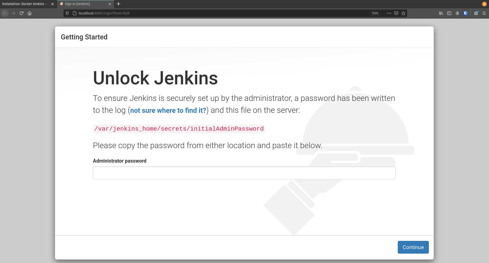
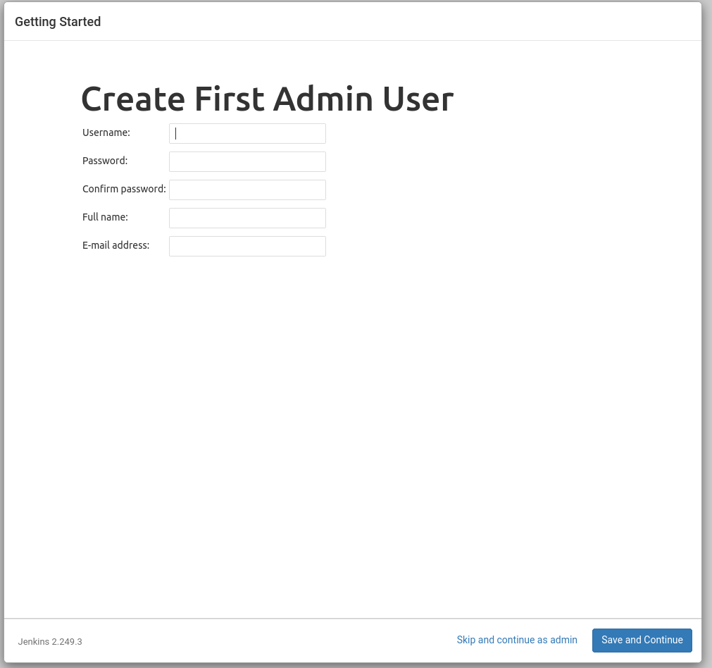

Installation: Docker Jenkins
What do We Need
We are using Jenkins as our CI/CD tool that will make our life much easier. We want to configure this tool so that it will:
- compile our Java source code
- test our Java source code
- create our build artifacts
- deliver our build artifacts
We will need to create an environment for our Jenkins tool AND for a testing database. Luckily we can do this quickly and easily with Docker.
warning
Do not use the following docker-compose.yml file to create your Jenkins and Postgis databse. A docker-compose.yml file will be provided for you in a later step.
version: "3.7"
services:
jenkins:
image: launchcodedevops/jenkins-awscli
ports:
- "${JENKINS_PORT:-8080}:8080"
postgres:
image: postgis/postgis:12-master
# hardcode here for consistency
# this is an ephemeral test db its credentials are arbitrary
environment:
- POSTGRES_DB=test
- POSTGRES_USER=test
- POSTGRES_PASSWORD=test
The preceding docker-compose.yml file would create two docker containers: jenkins and postgres. They would be spun up on the same virtual Docker network and therefore would be able to communicate with each other via DNS resolution.
Steps
- Clone docker-compose.yml
- Create docker
.env file
- Start Jenkins and Postgis containers
Clone docker-compose.yml
As there is a little more to the example docker-compose.yml above we have created a starter repository for you that has a complete docker-compose.yml file and a template of the jenkins.env file you will need to create.
Navigate to and clone the Jenkins Compose Repository to your computer.
Looking over the docker-compose.yml pay extra attention to the jenkins.env and the volumes. This docker-file.yml is expecting a env file named jenkins.env it will need to match the template file: template.jenkins.env.
This docker-compose.yml also sets up a persistent volume. Although the containers are disposable a volume will be created and used for each unique container. This important as we are storing some information in our Jenkins container that we want to be permanent. We use this volume as a way for storing this information that needs to persist.
You can learn more about Docker Volumes by referring to their documentation.
Create Docker .env File
Before we can create this containers we will first need to create a jenkins.env file to be used by our docker-compose.yml file.
In the same directory as the docker-compose.yml file create a new file named jenkins.env and add the following environment variables:
DB_HOST=postgres
DB_PORT=5432
DB_NAME=test
DB_USER=test
DB_PASS=test
APP_PORT=8080
AWS_DEFAULT_REGION=
AWS_ACCESS_KEY_ID=
AWS_SECRET_ACCESS_KEY=
# student bucket name: lc-nga-c7-name-artifacts
ARTIFACTS_BUCKET_NAME=
# (NO leading or trailing slash): todo-api
ARTIFACTS_PROJECT_DIRECTORY=
Most of the environment is already filled out because the testing database for Jenkins is known, however we need to add some information that is unique to our application:
AWS_DEAFULT_REGIONAWS_ACCESS_KEY_IDAWS_SECRET_ACCESS_KEYARTIFACTS_BUCKET_NAMEARTIFACTS_PROJECT_DIRECTORY
To find the first three values you will need to access your AWS credentials. You can do this by printing out your AWS config and credentials files:
cat ~/.aws/config
cat ~/.aws/credentials
Using the data from these print outs paste them into your jenkins.env file under the appropriate keys.
You will also need your AWS S3 artifacts bucket name which you can find by sifting through all the buckets:
Find your bucket name and put it into your jenkins.env file under the appropriate key.
There is one final env variable for ARTIFACTS_PROJECT_DIRECTORY this is helping us to keep our S3 artifacts bucket organized. We recommend using todo-app. This way your artifacts for this Todo Application will be copied to: s3://<your-bucket-name>/todo-app/.
Start Jenkins and Postgis Containers
After creating our jenkins.env file. We can spin up our Jenkins and Postgis containers.
note
You may have noticed that the Jenkins container is configured to run on port 8080 and the test database is configured to run on port 5432. You may already have services, or applications running on those ports. Make sure to shut them down, or alter the ports of the services this docker-compose.yml file creates.
Let’s start up our containers:
This should start two containers. You should see them if you run a docker ps command.
After starting the containers you should be able to access your project at localhost:8080:

Jenkins First Time Setup
The first time you start an empty Jenkins server you will need to unlock it with an admin password.
This password can be found at /var/jenkins_home/secrets/initialAdminPassword within the container. There are many ways we can access this value but the simplest is to have the container do the work for us! We can have the container print out the contents using the exec command.
Note
general form: docker exec <container name / ID> [...command]. The exec command instructs a container to execute the command string provided after the container name. The stdout of the command will be displayed on the host machine. You can read more about the exec command and its many uses here.
Enter the following command to instruct the container to cat the contents of password file:
$ docker exec <container-identifier> cat /var/jenkins_home/secrets/initialAdminPassword
Copy and enter the password into the Unlock Jenkins page at http://localhost:8080 then click Continue. On the next page select Install suggested plugins and give it a few minutes to install everything Jenkins needs.
Warning
Do not continue to the following section until all of the plugins have finished installing. Now is a good time to take a break for some coffee or fresh air.
After the plugins have been installed you will be prompted with the Create Admin User form.

In order to make debugging easier we will all use the same credentials:
- username:
launchcode
- password:
launchcode
You will then be asked about the Jenkins URL. For now we will leave this with the default value of http://localhost:8080/. Select Save and Continue.
Tip
In the future if you deploy Jenkins to the cloud don’t forget to update this setting to reference the Public DNS Name of your instance running the Jenkins container. This can be found in the sidebar under Manage Jenkins > Configure System > Jenkins Location > Jenkins URL.
Testing the AWS CLI
The Jenkins container we pulled down has the AWS CLI pre-installed. We passed it some environment variables that include our AWS credentials. The container used these environment variables to configure AWS CLI so that Jenkins would have the ability to interface with our S3 buckets!
This section will show you how to test this functionality.
Now let’s do a final test by running the AWS CLI from within the container. We will use exec again with some additional options.
This time we will pass the -it options to enter -i interactive mode and -t to attach the container to our terminal. By issuing the bash command we are instructing the container to execute the bash shell. Combined with the -it options this means our terminal will be bound to the bash session executed in the container.
Note
Attaching to the shell session of a container is the functional equivalent of SSH-ing into a remote machine. Depending on which shell the container has installed you will adjust the shell command issued in exec. In lean containers, that have minimal installed programs, bash may not be installed. You can usually use at least the original sh shell (before it was the B orn A gain SH ell)!
Tip
When you are done working inside the container you can use exit to get back to the host machine shell.
Before we enter the container we will list our S3 buckets on the host machine. That way once we are in the container we can issue the same command and confirm that the AWS CLI has been configured properly.
# issued from the host machine for comparison
$ aws s3 ls
Once we are in the container we will command AWS to list the S3 buckets for the credentialed account. We expect to see the same output we saw on our host machine.
# attach the container's bash shell to your terminal
$ docker exec -it <container-id> bash
# the terminal will now be attached to the container's shell session as root
# now check the AWS CLI is working within the container
$ aws s3 ls
# expect the same list of buckets as were listed on our host machine
# exit the container shell to return to your host shell
$ exit
Note
For the clever toads out there, yes, you could have used docker exec jenkins aws s3 ls and gotten the same result. But then you wouldn’t have learned how to enter a container! Like using SSH, entering a container is a rare occurrence. But it is useful to know for the times when debugging means getting inside for a look around.
Everything is ready to go! You can return to the Walkthrough: CI/CD With Jenkins page now.